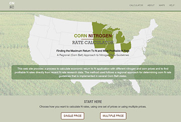

AMES, Iowa – The regional Corn Nitrogen Rate Calculator website, which has been helping farmers determine profitable nitrogen rates since 2005, now has a new URL (cnrc.agron.iastate.edu) and a revised nitrogen response trial database, and is more user friendly for mobile devices.
The largest changes to the website are the updated individual state nitrogen rate response trial database and, for Iowa, the addition of the southeast Iowa region. Nitrogen response trial sites for Iowa are grouped by two geographic regions, which now matches guidelines in the publication Nitrogen Use in Iowa Corn Production (CROP 3073). The publication can be downloaded for free at the online extension store.
“The site revisions allow users to have access to the latest nitrogen rate research, and it offers more tailored rate guidelines in Iowa,” said John Sawyer, professor and extension soil fertility and nutrient management specialist at Iowa State University.
While suggested nitrogen rates may have changed somewhat due to the update, the concept and calculation process of the online tool remains the same. The method continues to be based on a regional approach, providing nitrogen rate guidelines in six states across the Corn Belt: Iowa, Illinois, Michigan, Minnesota, Ohio and Wisconsin.
“The corn nitrogen rate calculator benefits farmers so they can understand needed nitrogen application rates, adjust for different crop rotations, and provide guidance and flexibility in choice of application rate,” said Sawyer. “More importantly, it allows adjustment in rate for changing nitrogen and corn prices.”
Using the Maximum Return to Nitrogen concept within the CNRC also helps farmers implement the most economical nitrogen rate inputs, which helps moderate water quality issues.
For more information about the CNRC, visit cnrc.agron.iastate.edu.


{kind=link}